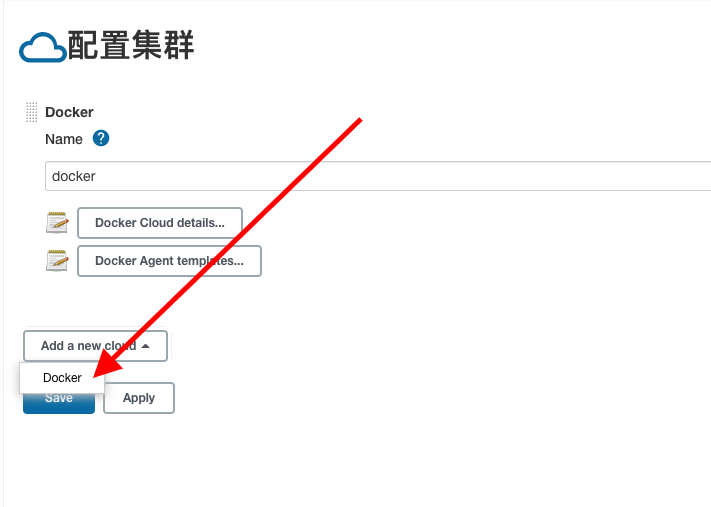
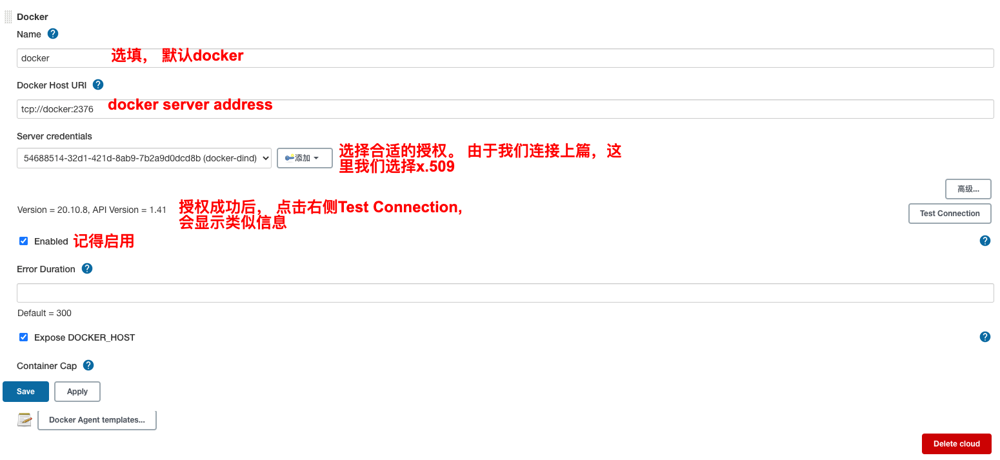
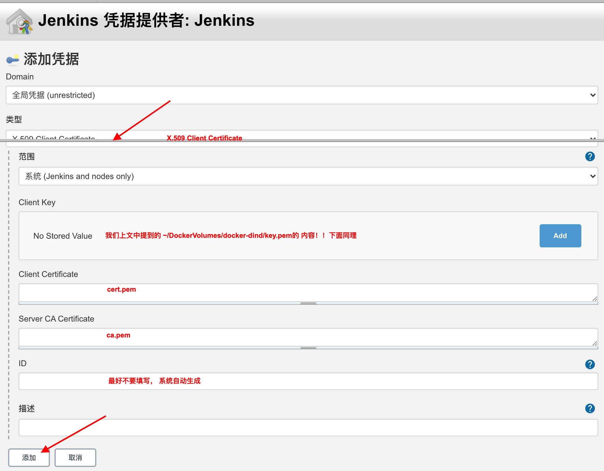
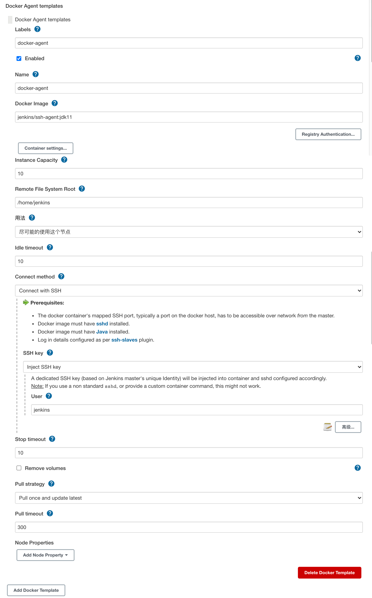

Jenkins 篇 - 配置Jenkins Slave
本文主要介绍如何使用jenkins/ssh-agent images配置jenkins slave. 另外此文基于上篇文章， 如果有任何疑问，请先阅读之
Step 1 安装Jenkins Docker Plugin
一旦安装成功，便可以在"系统管理">"节点管理">"Configure Clouds"下配置Docker Cloud了
Step 2 配置Docker Cloud
添加Docker Cloud

一旦添加后， 会出现如上图所示的Docker 配置
配置Docker Cloud
点击"Docker Cloud details..."会出现如下图所示的配置. 如果您是按照上文来的， 按图类似配置即可
配置Docker Cloud

配置Server credentials

配置Docker Agent Template
图片中可能用的文字jenkins/ssh-agent:jdk11
